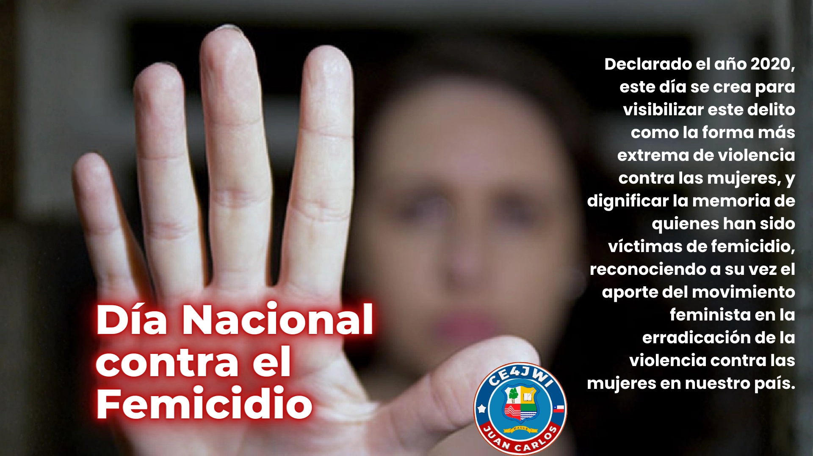

19 de Diciembre 2025

Alcanzar una mayor visibilización de la situación de violencia que afecta a las mujeres, es uno de los principales objetivos del proyecto de ley que instaura los 19 de diciembre de cada año como el Día Nacional Contra el Femicidio.
La iniciativa que tuvo su origen en una moción de diputadas y diputados quedó en condiciones de convertirse en ley, tras el respaldo unánime del Senado, instancia que valoró el avance y calificó el texto "como una oportunidad para un cambio cultural hacia un trato igualitario y respeto hacia las mujeres y la nueva Constitución consagrará la igualdad entre hombres y mujeres", se indicó transversalmente.
En la oportunidad, hicieron uso de la palabra los senadores Adriana Muñoz, Marcela Sabat, Isabel Allende, Ximena Rincón, Alejandro Navarro y Yasna Provoste quienes coincidieron en la importancia de visibilizar esta realidad y rindieron un homenaje a la familias de aquellas mujeres que han fallecido producto de la violencia de género.
El texto llama a la reflexión "mediante el establecimiento de un día especial destinado a hablar de femicidio, incorporándolo en el imaginario social como una posibilidad real de la que ninguna está a salvo; que recuerde que las mujeres deben ser oídas, de modo que el femicidio, como un tipo de violencia específica tenga un lugar en las organizaciones sociales, en la academia, en el calendario y en la legislación; pero también para tener un día especial en el cual se recuerde a las mujeres y niñas asesinadas, de modo de presionar a la sociedad civil, a los medios de comunicación, al Estado y al gobierno a actuar contra la violencia de género e interpela a legislar, financiar y optimizar el funcionamiento institucional existente en materia de prevención y reparación de la violencia extrema".
Cabe consignar que se eligió el día 19 de diciembre, porque recuerda el trágico caso de Javiera Neira Oportus, quien en el año 2005 y con tan sólo 6 años, fue asesinada por su padre, hecho que se transformó en un ícono por la lucha contra el femicidio marcando un antes y un después en la concepción social que se tiene respecto al tema.
Un delito con nombre propio en la ley chilena
En Chile, el femicidio está tipificado en el Código Penal desde la Ley 20.480, promulgada en 2010, que lo incorporó como un delito específico cuando una mujer es asesinada por quien es o fue su cónyuge, conviviente o pareja. Fue un paso importante, porque puso en el centro de la discusión una violencia que durante años se trató como un asunto privado.
Años después, la Ley 21.212, conocida como Ley Gabriela, promulgada en 2020, amplió la definición del femicidio para incluir otros vínculos y contextos, reconociendo también el femicidio por razón de género. Con ello se cerraron vacíos legales que dejaban sin sanción casos tan dolorosos como los que vemos a diario.
Memoria, prevención y comunidad
Organizaciones sociales, agrupaciones de mujeres y la ciudadanía realizan actividades de memoria, difusión y prevención en todo el país.
Prevenir el femicidio es tarea de todas y todos: conversar, educar y estar atentos a las señales de violencia. Nadie debería enfrentar este drama en silencio, y por eso es tan importante que existan redes de apoyo y canales de orientación disponibles durante todo el año.
Si tú o alguien cercano vive una situación de violencia, en Chile existe el Fono de Orientación 1455, gratuito y disponible durante todo el año, donde se entrega contención, información y orientación sobre los pasos a seguir. No es necesario estar sola en este proceso.
COMO RADIOAFICIONADO REALIZARÉ ESTA ACTIVIDAD A UN SOLO CONTACTO